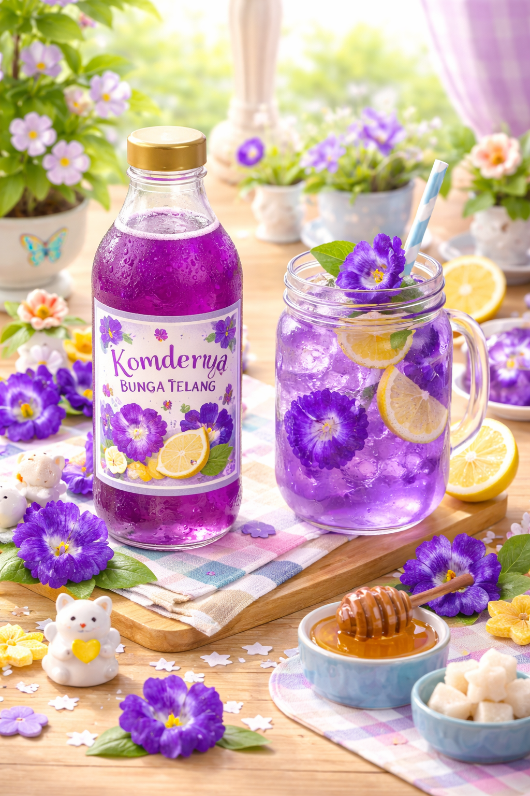

Kombucha bunga telang merupakan minuman hasil fermentasi teh yang ditambahkan bunga telang sebagai bahan alami pemberi warna dan antioksidan. Proses fermentasi dilakukan oleh kultur bakteri dan ragi yang dikenal sebagai SCOBY sehingga menghasilkan rasa asam segar serta sedikit karbonasi alami.
Penambahan bunga telang memberikan warna ungu kebiruan yang khas serta meningkatkan kandungan senyawa bioaktif yang bermanfaat bagi kesehatan. Oleh karena itu, kombucha bunga telang dapat menjadi alternatif minuman fungsional yang alami, menyegarkan, dan memiliki nilai gizi tambahan.